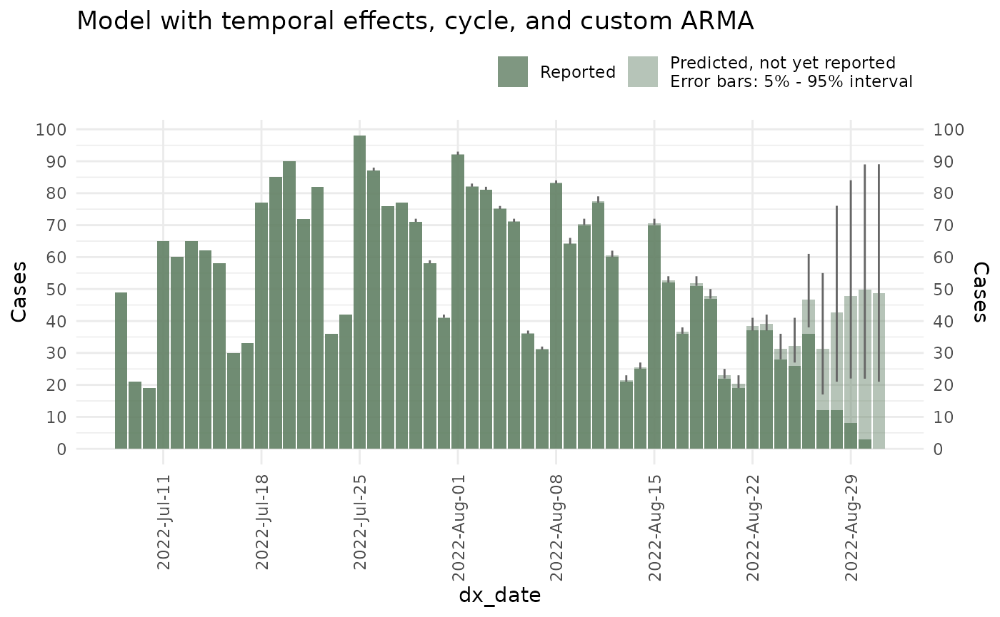
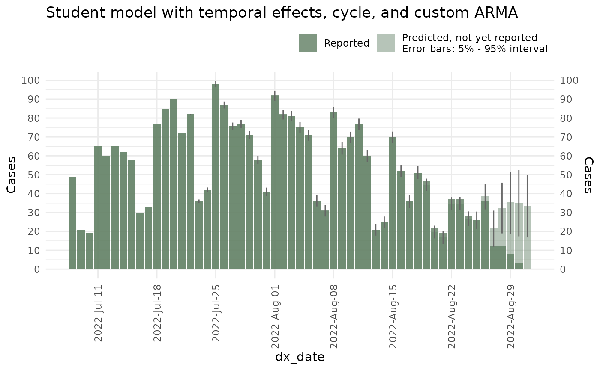
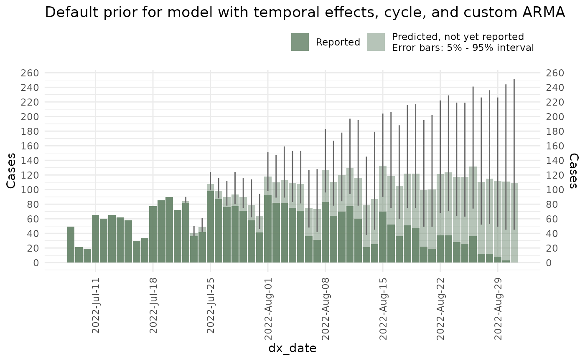

Advanced nowcast options
Source:vignettes/articles/Advanced-nowcast-options.Rmd
Advanced-nowcast-options.RmdThis vignette will give you an overview of the advanced options in
the nowcast() function of the
diseasenowcasting package including the following:
- Using strata.
- Adding time covariates.
- Adding holidays.
- Adding cycles.
- Changing the autorregresive components.
- Changing the distribution.
- Getting a sample from the prior.
- Changing the priors.
- Changing the method.
For this tutorial we will use the mpoxdat dataset
contained in the package.
data(mpoxdat)This contains date of diagnosis (dx_date), date of
report to the New York Health’s system (dx_report_date), a
simulated race covariate and the counts of observations in
that case n:
mpoxdat |> head()
#> # A tibble: 6 × 4
#> # Rowwise:
#> dx_date dx_report_date race n
#> <date> <date> <chr> <int>
#> 1 2022-07-08 2022-07-12 Asian 4
#> 2 2022-07-08 2022-07-12 Black 6
#> 3 2022-07-08 2022-07-12 Hispanic 6
#> 4 2022-07-08 2022-07-12 Non-Hispanic White 6
#> 5 2022-07-08 2022-07-13 Asian 2
#> 6 2022-07-08 2022-07-13 Black 3For the purpose of the example we will use the data until September 2022:
Note Throughout this tutorial we will use the
method = "variational"which is less exact than"sampling"just because of speed. Users should use the"sampling"for their final version.
Using strata
A nowcast can be generated by stratified covariates specifying which
column (or columns) correspond to the strata. In our case
we can specify race to obtain a nowcast
stratified by race:
ncast_race <- nowcast(mpox_reduced, true_date = "dx_date",
report_date = "dx_report_date", strata = "race", refresh = 0,
method = "variational")And subsequent operations including summary,
plots:
plot(ncast_race, datesbrakes = "1 week", rowsfacet = 3, casesbrakes = 3)
As well as backtesting:
#Backtesting for a random date in the past:
btest <- backtest(ncast_race, dates_to_test = as.Date("2022/08/04"), refresh = 0)and calculating metrics by the strata:
backtest_metrics(btest)
#> # A tibble: 5 × 14
#> horizon Strata_unified model now mse se_point wis overprediction
#> <dbl> <chr> <chr> <date> <dbl> <dbl> <dbl> <dbl>
#> 1 0 Asian mode… 2022-08-04 6.21 38.6 2.91 0
#> 2 0 Black mode… 2022-08-04 2.77 7.65 2.67 0
#> 3 0 Hispanic mode… 2022-08-04 13.4 180. 4.65 1.14
#> 4 0 Non-Hispanic Whi… mode… 2022-08-04 12.1 147. 4.36 1
#> 5 0 Other mode… 2022-08-04 15.4 238. 7.25 0
#> # ℹ 6 more variables: underprediction <dbl>, dispersion <dbl>, bias <dbl>,
#> # interval_coverage_50 <dbl>, interval_coverage_90 <dbl>, ae_median <dbl>All of the remaining examples will be estimated without covariates and without backtesting just to improve the speed of the tutorial.
Adding temporal effects
Time covariates (called temporal effects) can be
added to the epidemic process or to the delay process. Simple time
covariates include day_of_week (codifying all days from
Monday to Sunday), weekend (codifying only Saturday and
Sunday), day_of_month (codifying the day from 1 to 30 or 31
depending on the month), month_of_year (codifying January
to December), week_of_year (codifying the epidemiological
week of the year according to the CDC) and holidays which
are explained in a later section.
Temporal effects can be added with the
temporal_effects() function where the covariates can be set
either to be TRUE or FALSE:
temporal_effects(day_of_week = TRUE, week_of_year = TRUE)
#>
#> ── Temporal effect object ──
#>
#> The following effects are in place:
#> • day_of_week
#> • week_of_year
#> By default, the model tries to infer the best temporal effects for the given data and will throw a warning when they don’t make sense (for example adding day of the week effects to weekly data).
#Add temporal effects for epidemic process
epidemic_effects <- temporal_effects(day_of_week = TRUE, week_of_year = TRUE)
#Add temporal effects for delay process to have an effect on delay if weekend
delay_effects <- temporal_effects(weekend = TRUE)
ncast_temp <- nowcast(mpox_reduced, true_date = "dx_date", report_date = "dx_report_date",
temporal_effects_epidemic = epidemic_effects,
temporal_effects_delay = delay_effects,
refresh = FALSE,
method = "variational", #<- Change to sampling when in production
seed = 87245)The difference between epidemic and delay effects is as follows:
epidemic_effects Refer to the time-covariates that affect the epidemic process. For example, the epidemic process might be affected by the epidemiological week due to yearly seasonality of the disease such as in the case of influenza or dengue.
delay_effects Refer to the time-covariates that affect the reporting process. For example, the reporting process might be affected by laboratories not working at full capacity during the weekend or during holidays thus making the report slower for thus dates.
Adding holidays
Holidays can be added using an
almanac::rcalendar() from the alamanc
package. Once a calendar has been created it can be integrated into
the holidays temporal effect.
For example here we use the US Federal Calendar
(almanac::cal_us_federal()) already included in the almanac
package:
library(almanac)
#Add temporal effects for epidemic process
temporal_effects(day_of_week = TRUE, week_of_year = TRUE, holidays = cal_us_federal())
#> ── Temporal effect object ──
#>
#> The following effects are in place:
#> • day_of_week
#> • week_of_year
#> • holidays
#> Thus we can run our new model accounting for holiday effects both in the reporting (due to labs not working at full capacity) and the epidemic (due to individuals behaving differently during holidays and thus changing the epidemic process):
#Add temporal effects for epidemic process
epidemic_effects <- temporal_effects(day_of_week = TRUE, week_of_year = TRUE,
holidays = cal_us_federal())
#Add temporal effects for delay process to have an effect on delay if weekend
delay_effects <- temporal_effects(weekend = TRUE, holidays = cal_us_federal())
ncast_temp <- nowcast(mpox_reduced, true_date = "dx_date", report_date = "dx_report_date",
temporal_effects_epidemic = epidemic_effects,
temporal_effects_delay = delay_effects,
refresh = FALSE,
method = "variational", #<- Change to sampling when in production
seed = 87245)And this is what the model looks like:
Interested users can consult the almanac package’s documentation on how to create a calendar.
Adding cycles
Cycles correspond to increases/decreases in the epidemic process that cannot be accounted for by seasonality. While seasonality increases/decreases during usually specific periods in time (say increase in dengue cases during rainy season), cycles correspond to stochastic increases/decreases that have no season (say if dengue cases one year rose during rainy season but the following year during dry season).
Cycles can be added into the model by setting the
has_cycle option to TRUE.
ncast_cycle <- nowcast(mpox_reduced, true_date = "dx_date", report_date = "dx_report_date",
temporal_effects_epidemic = epidemic_effects,
temporal_effects_delay = delay_effects,
has_cycle = TRUE,
refresh = FALSE,
method = "variational", #<- Change to sampling when in production
seed = 87245)Changing the autorregresive components
The nowcast includes autorregresive and moving average components for the delay and the epidemic process.
The autorregresive components can be setup with the AR()
function. These are interpreted on how much the epidemic process of the
current observation depends on the cases of the previous observations.
So for example, AR(epidemic_trend = 2) can be interpreted
as the epidemic trend depending upon the previous two observations (the
idea being that a lower or higher previous cases imply different things
for the current prediction).
Here:
epidemic_trend Refers to the trend in the epidemic (disease) process independently of the report date.
delay_trend Refers to the dependency in the delay of reporting. The idea being that if more cases were delayed in the previous observation, more cases will be delayed in the current observation.
ncast_arma <- nowcast(mpox_reduced, true_date = "dx_date", report_date = "dx_report_date",
temporal_effects_epidemic = epidemic_effects,
temporal_effects_delay = delay_effects,
has_cycle = TRUE,
autoregresive = AR(epidemic_trend = 2, delay_trend = 2),
moving_average = MA(2),
refresh = FALSE,
method = "variational", #<- Change to sampling when in production
seed = 87245)And the plot:
plot(ncast_arma, datesbrakes = "1 week") +
ggtitle("Model with temporal effects, cycle, and custom ARMA")
Changing the distribution
By default the nowcast() uses a Negative
Binomial distribution. However it can be changed with the
dist parameter to be either a Poisson,
Normal or Student. Each of these generate a
slightly different model with the greatest effect seen on the
variance.
ncast_student <- nowcast(mpox_reduced, true_date = "dx_date", report_date = "dx_report_date",
temporal_effects_epidemic = epidemic_effects,
temporal_effects_delay = delay_effects,
has_cycle = TRUE,
dist = "Student", #<- Changed the distribution
refresh = FALSE,
method = "variational", #<- Change to sampling when in production
seed = 87245)This is what the predictions look like
plot(ncast_student, datesbrakes = "1 week") +
ggtitle("Student model with temporal effects, cycle, and custom ARMA")
Getting a sample from the priors
In a bayesian scenario, the priors establish the previously expected behaviour of the epidemic process before acquiring information. In cases where not enough information is present (for example at the start of an outbreak) the prior will dictate the expected behaviour of the model.
To visualize the prior epidemic process you can set up the
prior_only option of the nowcast to TRUE:
ncast_prior <- nowcast(mpox_reduced, true_date = "dx_date", report_date = "dx_report_date",
temporal_effects_epidemic = epidemic_effects,
temporal_effects_delay = delay_effects,
has_cycle = TRUE,
refresh = FALSE,
prior_only = TRUE,
method = "variational", #<- Change to sampling when in production
seed = 87245)
plot(ncast_prior, datesbrakes = "1 week") +
ggtitle("Default prior for model with temporal effects, cycle, and custom ARMA")
Changing the priors
Hyperparameters for the distribution’s priors can be changed with the
set_priors() function. This function included a list of all
of the hyperparameters used in the model as well as their values. One
can change, for example, the hyperprior for the variance of the delay
part of the process by changing sd_nu_param_1 and
sd_nu_param_2.
In the following example, we add more variance to the delay:
ncast_prior_2 <- nowcast(mpox_reduced, true_date = "dx_date", report_date = "dx_report_date",
temporal_effects_epidemic = epidemic_effects,
temporal_effects_delay = delay_effects,
has_cycle = TRUE,
refresh = FALSE,
prior_only = TRUE,
priors = set_priors(sd_nu_param_1 = 0.0, sd_nu_param_2 = 100),
method = "variational", #<- Change to sampling when in production
seed = 87245)
plot(ncast_prior_2, datesbrakes = "1 week") +
ggtitle("Custom prior for model with temporal effects, cycle, and custom ARMA")
Changing the method
There are currently three methods for fitting the model: sampling, variational and optimization.
- Sampling is the most precise and the slowest. Performs MCMC sampling following Stan’s sampling routine. Internally it uses [rstan::sampling()].
2.Variational method is less precise than sampling but faster. It can oftentimes yield results as good (in terms of prediction power) as the sampling by a reduced time cost. It uses [rstan::vb()] to get an approximate posterior.
- Optimization is the least accurate and fastest and should only be used when prototyping. Performs maximum likelihood optimization with [rstan::optimizing()] to get an approximate point estimate. This method should only be used by developers for fast testing of a [nowcast()] object.
The method can be changed with the method option. For
example here we perform an optimization: